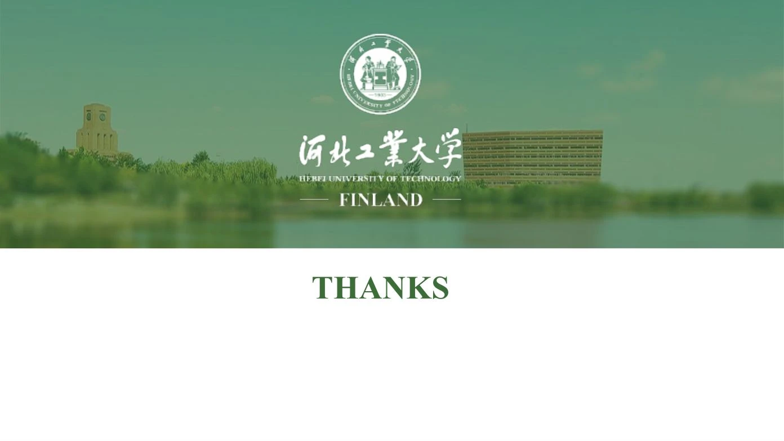
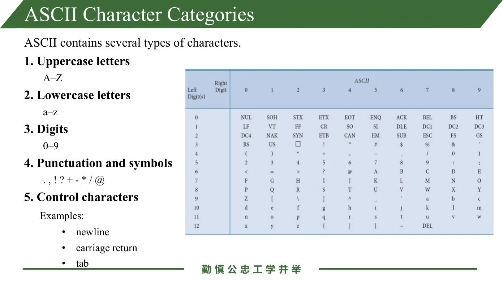

HDD5020 信息处理基础（计算机导论） · 第 04 / 12 讲
Week 4 · 字符与文本编码：ASCII、Unicode、UTF-8
Character and Text Encoding
所属章节：第 3 章 数字编码与压缩
资料来源 · 1 项 / 已附 0 项
Week4- Character and Text Encoding/Lecture4.pdf未附原文件
未附文件仅列原始名称；版本与核对日期由维护者登记。
本节定位
第 2、3 讲把「数」变成了 0/1。可屏幕上绝大多数内容不是数，而是文字。这一讲回答三个问题：字符凭什么变成 0/1（编码）、为什么同一个字节串能读出不同的字（编码方案）、为什么会出现乱码（编码不匹配）。
本节的核心是一条四层链：字符 → 码位 → 编码 → 字节。把这条链分清，ASCII 与 Unicode 的关系、UTF-8 为什么变长、乱码从哪来，就都是同一条链上不同层的现象，不需要死记。
本讲与前后讲的关系：上一讲用补码与 IEEE 754 处理「数值」，本讲处理「符号」；下一讲把同样的「采样—量化—编码」框架搬到图像上。三者合起来，文本、数值、图像、音视频就都有了数字化路径。
学完本讲你应当能够：
- 区分字符、文本、字符集、字符编码四个概念
- 说出标准 ASCII 与扩展 ASCII 的位数、字符数与取值范围
- 写出常见字符的 ASCII 码（A、a、0、空格）并解释大小写差 32
- 说明 Unicode 与 UTF-8 的关系，指出「Unicode 就是编码」为什么错
- 按 UTF-8 的首字节模式判断一个字符占几个字节，并把码位编码成字节
- 计算一段中英混排文本在 UTF-8 下的字节数
- 解释乱码（mojibake）的成因，并说明为什么「字节不知道自己是什么编码」
一、从字符到二进制
1.1 计算机只存二进制
课件开场重复了全书的主线：计算机以二进制数据的形式处理与存储信息。例如 A → 01000001。
1.2 一个关键追问
课件紧接着问：01000001 到底是什么？答案是取决于编码方案（"It depends on the encoding scheme"）。同一个字节串，按 ASCII 读是字母 A，按无符号整数读是 65，按别的编码读可能是另一个字符或半个字符。
1.3 两个方向
字符 → 编码 → 二进制表示
二进制表示 → 解码 → 字符课件补了一句关键结论：同一串位在不同编码方案下可以代表不同字符。这句话是全讲的伏笔，第十三节的乱码就是它的直接后果。
二、什么是字符，什么是文本
2.1 字符的定义
字符（character）是书面或文本信息的基本单位。课件给了六类例子：
- 字母：A、B、a、b
- 数字字符：0、1、2
- 标点：
.、,、?、! - 符号：
+、@、€ - 汉字：你、好
- 其他文字系统：Ж（西里尔）、한（韩文）
注意第二行写的是「数字字符」，不是数字。这就引出下一个区分。
2.2 字符 ≠ 数字
课件的例子很短但很关键：5 作为字符，是那个字形「5」；5 作为数字，是一个整数值。计算机可能用不同的方式表示它们，取决于上下文。
| 写法 | 角色 | 编码结果 | 用途 |
|---|---|---|---|
"5" | 字符 | ASCII 53 = 0011 0101 | 文本里的一个字符 |
5 | 数值 | 二进制 0000 0101（8 位） | 参与算术运算 |
这不是文字游戏：如果把「5」当数值存，字节是 00000101；当字符存，字节是 00110101。同一屏幕上的字形，内存里完全不同的两个值。程序里把字符串 "5" 转成整数 5，做的就是这件事（int("5")）。
2.3 文本是字符的序列
课件定义：文本是字符的序列。例如 Hello 可以看成 H、e、l、l、o 五个字符排成一列。于是：
文本 = 字符序列
在计算机层面：文本 → 字符 → 编码后的二进制数据这个分解很重要：字节数 ≠ 字符数（第十四节会算），因为「一个字符几个字节」由编码决定。
三、为什么需要字符编码
课件把矛盾摆得很清楚：计算机只存二进制，而人类用的是字母、数字、标点、符号、汉字、阿拉伯文字……因此需要一套系统化的映射，把字符对应到二进制值。
编码（character encoding）的定义：它规定字符怎样被表示为数值，再表示为二进制数据。例：
A → 65 → 01000001注意这是两级映射：字符到编号（65），编号到二进制（01000001）。第 2 讲讲过的「按权展开」在这里第二次出现——65 就是 01000001 的十进制形式。
四、字符集与字符编码：两件不同的事
4.1 各自的定义
| 概念 | 定义 | 回答的问题 | 例子 |
|---|---|---|---|
| 字符集（character set） | 规定「有哪些字符存在」 | 有没有这个字符？ | A B C … Z；a b … z；0 1 … 9 |
| 字符编码（character encoding） | 规定这些字符怎样在计算机数据中表示 | 它写成什么字节？ | A → 65 → 01000001 |
4.2 一句话区分
课件给了一句极简的对照：字符集回答「What characters?」，编码回答「How are they represented?」。
为什么这个区分重要？因为 Unicode 是一个字符集（它规定了全世界有哪些字符、各叫什么码位），而 UTF-8 是一种编码（它规定这些码位怎么写字节）。两者不是同一层的东西，混为一谈就会得出「Unicode 是编码」的错误结论（第八节）。
五、ASCII
5.1 全称与来历
ASCII = American Standard Code for Information Interchange（美国信息交换标准代码）。课件说明它最初是为表示英文文本而设计的。
5.2 两种版本
| 版本 | 位数 | 字符数 | 取值范围 |
|---|---|---|---|
| 标准 ASCII（standard） | 7 位 | 128 个 | 0–127 |
| 扩展 ASCII（extended） | 8 位 | 256 个 | 0–255 |
7 位是因为最初只用低 7 位，最高位留给校验或扩展；8 位版本把 128–255 也用上了，塞进西欧字母（à、ö、ß）与制表符。问题在于：扩展的 128 个位置，不同厂商、不同国家各填各的，导致互不兼容——这是第六节「局限」的一半原因。
5.3 必须记住的几个码
| 字符 | 十进制 | 二进制（7 位） |
|---|---|---|
| A | 65 | 1000001 |
| B | 66 | 1000010 |
| a | 97 | 1100001 |
| 0（数字字符） | 48 | 0110000 |
| 空格 | 32 | 0100000 |
a 与 A 只差一个位。③ 数字字符 0–9 连续排：48–57。有了这三条，绝大多数编码题都能现场推出来。5.4 五类字符
- 大写字母 A–Z
- 小写字母 a–z
- 数字 0–9
- 标点与符号：
.、,、!、?、+、−、*、/、@ - 控制字符（control characters）：换行、回车、制表符等
第五类是容易被忽略的一类：它们不显示图形，而是指挥设备动作。回车（CR，13）、换行（LF，10）、制表符（HT，9）都属于这一类。第十五节讲换行符时还会用到。
5.5 完整算例：CAT
课件用它示范「文本 → 编号 → 二进制」的完整链条：
C → 67 → 1000011
A → 65 → 1000001
T → 84 → 1010100
CAT → 67 65 84 → 1000011 1000001 1010100三个字符，三个字节（按 7 位写）/ 三个字节（按 8 位补前导 0 写）。ASCII 文本的大小就等于字符个数乘以 1 字节。
六、ASCII 的局限
课件用四个反例把局限摆出来：你好、Привет、こんにちは、안녕하세요。标准 ASCII 根本没有这些文字系统的字符。
问题的本质：128 个字符装不下世界上所有书写系统。于是历史上出现了大量互不兼容的扩展编码（各种「代码页」、GB2312/GBK、Shift-JIS、ISO-8859 系列……）。同一份文件在不同机器上打开，就可能变成乱码。这就直接催生了 Unicode。
七、Unicode
7.1 定义
Unicode 是一个通用字符集，目标是表示不同书写系统的文本。课件列出它覆盖的范围：拉丁、希腊、西里尔、中文、日文、韩文、阿拉伯、希伯来等等，另外还包括大量符号与 emoji。
7.2 码位（code point）
Unicode 给每个字符分配一个唯一的码位，通常写成十六进制形式 U+XXXX。
| 字符 | Unicode 码位 |
|---|---|
| A | U+0041 |
| a | U+0061 |
| 你 | U+4F60 |
| 好 | U+597D |
| 😂 | U+1F602 |
注意最后一行是 5 位十六进制：Unicode 的码位空间超过 0xFFFF，所以码位要写 4–6 位。这也预告了 UTF-8 为什么必须有 4 字节的形式。
7.3 一个必须记住的提醒
课件加粗写了一句话：Unicode 码位不一定等于文件里存的字节。这个区分在第 8 节与第 9 节会被反复使用。
八、Unicode 不是编码
8.1 常见误解
课件直接点出这个误解：Unicode ≠ UTF-8。更准确的说法是：Unicode 定义了大量字符及其码位；UTF-8 / UTF-16 / UTF-32 定义这些码位怎样编码成字节。
8.2 四层概念链
字符（Character）
↓
Unicode 码位（Code Point）
↓
UTF-8 / UTF-16 / UTF-32
↓
字节（Bytes）把这条链背下来，很多判断题就能秒答。例如「一个字符在 UTF-8 里占 1 个字节」错在第一层到第四层的距离；「U+4F60 是 E4 BD A0」混淆了第二层与第四层。
九、UTF-8 的结构
9.1 全称与变长
UTF-8 = Unicode Transformation Format – 8-bit。它是 Unicode 的一种变长编码：一个字符可能用 1、2、3 或 4 个字节，取决于它的码位。
| 字符 | 字节数 | 说明 |
|---|---|---|
| A | 1 字节 | 落在 ASCII 范围 |
| é | 2 字节 | 拉丁补充区 |
| 你 | 3 字节 | 中日韩区 |
| 😂 | 4 字节 | emoji，码位超过 0xFFFF |
9.2 首字节模式表
UTF-8 用首字节的高位模式告诉解码器「这个字符一共几个字节」：
| 字节数 | 首字节模式 | 可容纳的有效位 | 后面跟几个续字节 |
|---|---|---|---|
| 1（ASCII） | 0xxxxxxx | 7 位 | 0 个 |
| 2 | 110xxxxx | 5 位 | 1 个（10xxxxxx） |
| 3 | 1110xxxx | 4 位 | 2 个 |
| 4 | 11110xxx | 3 位 | 3 个 |
续字节（continuation byte）的固定形式是 10xxxxxx：最高位固定为 1、次高位固定为 0，剩下 6 位装数据。
为什么要这样设计？因为解码器只读第一个字节就能知道边界，不需要额外的长度字段；而且 ASCII 字节（0 开头）与多字节序列的首字节（11 开头）、续字节（10 开头）互不混淆，可以随时从中间开始扫描。这是 UTF-8 能被广泛采用的技术原因。
9.3 为什么 UTF-8 流行
课件给了四条，每一条都能落到具体后果：
- ASCII 兼容：前 128 个 Unicode 字符与 ASCII 的字节值完全相同，所以「A」在两种编码下都是 01000001。旧文件不用转换就能读。
- 变长：不同字符用不同字节数，英文字本不会为了中文而付出代价。
- 覆盖广：几乎能表示所有现代 Unicode 字符。
- 用得广：网页、文本文件、源代码、数据交换、大量软件系统都用它。
第一条尤其重要：这就是为什么英文网页从 ASCII 迁到 UTF-8 几乎不需要改内容，而中文网页迁移就必须要转码。
十、三个完整的 UTF-8 编码例子
10.1 英文：A
Unicode 码位：U+0041
UTF-8：01000001与 ASCII 的字节值完全相同，所以叫 ASCII 兼容（ASCII compatibility）。课件强调这一点时说得很直白：ASCII 里 A 是 01000001，UTF-8 里 A 也是 01000001。
10.2 中文：你
码位 U+4F60，UTF-8 用 3 个字节，字节是 E4 BD A0，二进制：
11100100 10111101 10100000推导过程（把 16 位码位按 4+6+6 切开，塞进三段模板）：
- 码位写成 16 位二进制：
0100 1111 0110 0000 - 首字节模板
1110xxxx，填入前 4 位0100→1110 0100= E4 - 第二字节模板
10xxxxxx，填入接下来 6 位111101→10 111101= BD - 第三字节模板
10xxxxxx，填入最后 6 位100000→10 100000= A0 - 拼起来：
你 → U+4F60 → E4 BD A0
核对位数：4 + 6 + 6 = 16，正好是 16 位码位的全部内容，一位不剩、一位不补。这就是模板里xxxx个数的来历。
10.3 emoji：😂
码位 U+1F602 需要 21 位二进制 000 011111 011000 000010，超过 16 位，只能走 4 字节模板（3+6+6+6 = 21 位）：
11110xxx 10xxxxxx 10xxxxxx 10xxxxxx
→ F0 9F 98 82这解释了为什么 emoji 比汉字更占空间：汉字 3 字节，emoji 4 字节。发一条全是表情的消息，文件比同字数的中文大。
十一、字符、码位与字节：三层对照
课件专门用一页把这三个概念并列，避免混淆：
| 层 | 你的例子 | 形式 |
|---|---|---|
| 字符（character） | 你 | 人类看到的字形 |
| Unicode 码位（code point） | U+4F60 | 抽象编号 |
| UTF-8 编码（encoding） | E4 BD A0 | 字节序列（十六进制写法） |
| 存储数据（stored data） | 11100100 10111101 10100000 | 磁盘/内存里真正的 0 和 1 |
关系链：字符 → 码位 → 编码 → 字节。这条链的每一层都可以被独立追问，考试里「这个字符占几字节」「这个码位写成什么字节」是两个不同的问题。
十二、编码与解码
12.1 编码
编码（encoding）按指定方案把字符转换成字节序列。例："Hello" → UTF-8 → 字节。概念流程是：字符序列 → 码位 → UTF-8 → 字节。
12.2 解码
解码（decoding）是反向过程：字节 → UTF-8 解码器 → Unicode 码位 → 字符 → 文本。课件给的例子：E4 BD A0 → UTF-8 → U+4F60 → 你。
12.3 双方必须约定一致
| 过程 | 方向 | 目的 |
|---|---|---|
| 编码（encoding） | 字符 → 字节 | 存储与传输文本 |
| 解码（decoding） | 字节 → 字符 | 解释与阅读文本 |
课件加了一句重要提醒：编码器与解码器必须对编码达成一致。用错编码就会得到错误字符（第十三节）。
十三、乱码（mojibake）
13.1 现象
课件展示了一种典型现象：本该显示 你好，屏幕上却出现 ä½ å¥½ 一类的怪字符。这种现象叫乱码（mojibake）。
它的成因只有一个：用与生成时不匹配的编码去解码。
13.2 逐步还原
以「你好」为例，两个汉字在 UTF-8 下是 6 个字节：E4 BD A0 E5 A5 BD。若某个程序不用 UTF-8，而用单字节的 Latin-1（每字节一个字符）去解码，就会得到 6 个互不相关的西欧字符——因为 E4、BD、A0 在 Latin-1 里各有各的样子。屏幕上于是出现一串「像字又不是字」的符号。
正确：你好 → UTF-8 → E4 BD A0 E5 A5 BD
错误：E4 BD A0 E5 A5 BD → Latin-1 解码 → 6 个乱字符13.3 关键教训
课件把教训写得很硬：字节本身并不知道自己代表哪种编码（"Bytes do not inherently know which encoding they represent"）。程序必须知道该怎么解释它们。
这条结论有一个非常实际的推论：拿到一份来历不明的文本文件，光看内容是猜不出编码的；必须看元数据、BOM、或者试。这也是第 4 章讲文件格式与元数据时的伏笔。
十四、文本要占多少空间
14.1 三个决定因素
- 字符个数
- 编码方案
- 具体是哪些字符
课件把最后一条单独强调，因为在 UTF-8 下这一点影响最大：英文常 1 字节，中文常 3 字节，部分符号与 emoji 常 4 字节。于是：
字符数 ≠ 字节数
14.2 两个算例
Hello：五个 ASCII 字符，每个 1 字节 → 共 5 字节。
你好：两个汉字，各 3 字节 → 2 × 3 = 6 字节。
同样的「两个字」与「五个字母」，字节数差了一倍多。写存储估算题时必须先问编码。
14.3 混合文本的算法
遇到中英混排，逐个字符判字节数再相加。判据是码位区间：码位 ≤ 0x7F 用 1 字节；≤ 0x7FF 用 2 字节；≤ 0xFFFF 用 3 字节；否则 4 字节。
十五、文本文件
文本文件通常包含编码后的字符数据，有时还带额外信息，例如字节顺序标记（Byte Order Mark，BOM）。常见文本格式有：
.txt .csv .html .xml .json格式只规定数据怎样组织，具体字节仍然取决于编码。课件画的链是：文本 → UTF-8 编码 → 字节 → 文件。
15.1 换行：文本不只是字符
课件提醒：文本还包含格式与控制信息。例如下面两行文字之间有一个换行：
Hello
World不同系统历史上用了不同的行尾约定：LF（
）、CR（
）、CRLF（
）。于是同一份文本在另一台机器上打开，换行可能显示不正常（例如所有行挤成一行，或每行之间多出空行）。
这与第七节的乱码是同一类问题：文件里只有字节，约定不同就解释不同。
十六、从键盘到屏幕：完整流水线
课件用「输入你好」把全讲串了一遍：
键盘输入 → 字符 → Unicode 码位 → UTF-8 编码 → 字节
→ 存储/传输 → UTF-8 解码 → Unicode 字符 → 显示保存文件的例子同样具体：新建 hello.txt，内容是 Hello, 你好!，过程是：文本 → Unicode 字符 → UTF-8 编码 → 字节序列 → 写入文件；打开时反向执行：字节 → UTF-8 解码 → 字符 → 显示。
把这条链记住，遇到任何「文件坏了/乱码了/字数不对」的问题，都能沿着链找出是哪一层出了差错。
十七、四个常见误解
| 误解 | 更准确的说法 |
|---|---|
| 「Unicode 就是一种字符编码」 | Unicode 定义字符与码位；UTF-8/UTF-16/UTF-32 才是把它们编码成字节的方案 |
| 「一个字符总是占一个字节」 | UTF-8 下每个字符占 1–4 字节 |
| 「ASCII 与 UTF-8 完全不同」 | UTF-8 对前 128 个字符与标准 ASCII 完全兼容 |
| 「一个字节自动告诉我们它是什么字符」 | 不一定，必须先知道用的是哪种编码 |
十八、课件小测（附答案）
课件留了三道快速检查题，第四节的例题与练习会用到：
- 标准 ASCII 能表示多少个字符？A. 64 B. 128 C. 256 D. 1024 → B
- 下列哪句正确？A. Unicode 与 UTF-8 是同一件事 B. UTF-8 里每个字符占一字节 C. UTF-8 是 Unicode 字符的一种编码 D. ASCII 能表示所有现代文字 → C
- 为什么 A 占 1 字节、你占 3 字节、emoji 占 4 字节？→ 因为 UTF-8 是变长编码，字节数由码位大小决定。
原版图页（源 PDF 插图页）




1.3.1 UTF-8 编码的前缀自同步特性（Self-Synchronization）
UTF-8 字符起始字节以 0（单字节）或 11...0（多字节）开头，后续字节恒以 10 开头。网络丢包错位时，解码器只需跳过后续 10 字节，遇到首字节即刻重获同步，绝无全局乱码蔓延风险；且以单个 8 位字节处理，完全消除字节序（Endian）BOM 困扰。
| English | 中文 | 说明 / 例句 |
|---|---|---|
| character | 字符 | A basic unit of written or textual information, e.g. A, 你, Ж. |
| character set | 字符集 | Defines which characters exist, e.g. ASCII, Unicode. |
| character encoding | 字符编码 | Defines how characters are represented as bytes, e.g. A → 65 → 01000001. |
| ASCII | 美国信息交换标准代码 | A 7-bit encoding for 128 English characters, values 0–127. |
| extended ASCII | 扩展 ASCII | An 8-bit variant with 256 characters; the upper 128 differ between vendors. |
| code point | 码位 | A unique number assigned to a Unicode character, written U+XXXX. |
| Unicode | 统一字符集 | A universal character set covering most writing systems; it is not an encoding. |
| UTF-8 | 8 位统一码转换格式 | A variable-length encoding of Unicode using 1–4 bytes per character. |
| variable-length encoding | 变长编码 | Different characters occupy different numbers of bytes. |
| continuation byte | 续字节 | A follow-up byte of the form 10xxxxxx in a multi-byte UTF-8 sequence. |
| ASCII compatible | ASCII 兼容 | The first 128 Unicode characters use the same byte values as ASCII. |
| encoding | 编码 | Characters → code points → bytes. |
| decoding | 解码 | Bytes → code points → characters. |
| mojibake | 乱码 | Garbled text produced by decoding bytes with the wrong encoding. |
| byte order mark (BOM) | 字节顺序标记 | Optional leading bytes in a text file that identify the encoding. |
| line ending | 行尾 | LF, CR or CRLF conventions that differ between systems. |
Cat 与 CAT 的 ASCII 码与字节，并解释大小写只差一位。C = 67、a = 97、t = 116；A = 65、T = 84。
Cat → 67 97 116 → 二进制 1000011 1100001 1110100，共 3 字节。
CAT → 67 65 84 → 二进制 1000011 1000001 1010100，共 3 字节。
大小写规律：A = 0100 0001（65），a = 0110 0001（97），只差第 5 位（从 0 计是 2^5 = 32）。所以大写到小写是「加 32」，小写到大写是「减 32」。
这条规律在编程里很实用：chr(ord(c) + 32) 就能把小写变大写。但它只对 ASCII 字母成立，对汉字与带音标的字母（如 é）无效——因为那些字符根本不在 65–122 这个区间。
é（U+00E9）按 UTF-8 编码成字节，写出推导过程。码位 0x00E9 只需 8 位：1110 1001。它大于 0x7F（127），不能用 1 字节，但小于 0x7FF，所以用 2 字节模板 110xxxxx 10xxxxxx（5 + 6 = 11 位，够装 8 位）。
- 补齐到 11 位：
000 11101001 - 首字节取前 5 位
00011：110 00011= C3 - 续字节取后 6 位
101001：10 101001= A9 - 结果：
é → U+00E9 → C3 A9
验证：C3 的首字节模式是 110 开头，说明这是 2 字节字符；A9 以 10 开头，符合续字节形式。两步都对，结果才可信。
这也解释了为什么「带音标的西欧字母」在 UTF-8 里占 2 字节，而纯 ASCII 字母只占 1 字节——码位跨过了 0x7F 这条线。
Hello, 你好! 在 UTF-8 下的字节数，并说明若改用 UTF-16 会怎样。逐字符判：
| 片段 | 字符数 | 每字符字节 | 小计 |
|---|---|---|---|
Hello | 5 | 1 | 5 |
, | 1 | 1 | 1 |
| 空格 | 1 | 1 | 1 |
你好 | 2 | 3 | 6 |
! | 1 | 1 | 1 |
合计 5 + 1 + 1 + 6 + 1 = 14 字节。字符总数是 11 个，字节数是 14——这就是「字符数 ≠ 字节数」。
若改用 UTF-16：BMP 内的字符（含汉字、ASCII）多为 2 字节，11 个字符约 22 字节，另外可能还有 BOM 的 2 字节。所以同一段中文文本，UTF-16 往往比 UTF-8 更大；但若文本全是汉字、且不含 ASCII，UTF-16 反而可能更省——编码选择要看内容。
答题模板：列表 → 逐段乘 → 相加 → 与字符数对照。凡是这类题都按这四步写，不会漏项。
ä½ å¥½ 这类怪字符。写出排查步骤。第一步，判断是不是编码问题。现象是「有字形但不通顺」，多半是编码不匹配；若显示为方块或问号，则可能是缺字体或缺字形。
第二步，反推原编码。若乱码里出现大量 Ã、Â、ä 这类西欧字符，说明原文件很可能用 UTF-8 编码，却被按 Latin-1 或 Windows-1252 解码了。
第三步，换解码器重开。在编辑器里把编码从 Latin-1 切到 UTF-8，若恢复正常即确认结论。
第四步，检查是否丢过信息。如果原文件曾被「按错误编码保存」，字节可能已被改写，此时无法还原，只能回到原始文件。这一步区分「只是显示错」与「已经坏掉」。
第五步，防复发。保存时显式指定 UTF-8，跨平台交换前统一编码，必要时保留 BOM。
这道题的通用思路是「现象 → 假设 → 验证 → 修复 → 预防」，可迁移到任何编码类故障。
- 写出
Hi!三个字符的 ASCII 十进制值与十六进制字节。 - 只看 UTF-8 首字节，判断下列各表示几字节字符：
0x41、0xC3、0xE4、0xF0。 - 计算
信息处理四个汉字在 UTF-8 下的字节数。 - 用自己的话解释「Unicode 不是编码」，并举一个例子说明混淆后会得出什么错结论。
- 为什么扩展 ASCII 会带来乱码？请说清「同一位置被不同厂商填了不同字符」这层原因。
- 一段 6 字节数据
E4 BD A0 E5 A5 BD，按 UTF-8 解码是什么？按 Latin-1 解码会怎样？
参考答案与思路
1. H = 72、i = 105、! = 33，十进制写出 72 105 33；十六进制 0x48 0x69 0x21。共 3 字节。
2. 0x41 = 0100 0001 以 0 开头 → 1 字节；0xC3 = 1100 0011 以 110 开头 → 2 字节；0xE4 = 1110 0100 以 1110 开头 → 3 字节；0xF0 = 1111 0000 以 11110 开头 → 4 字节。
3. 四个汉字都在 U+4E00–U+9FFF 区间（BMP 内、大于 0x7FF），每个 3 字节 → 4 × 3 = 12 字节。
4. Unicode 只规定「有哪些字符、各是哪个码位」，不规定怎么写字节；UTF-8/16/32 才规定字节形式。混淆后会得出「一个字符就是一个码位所以只占一字节」这类错结论，或把 U+4F60 直接当成存储内容。
5. 扩展 ASCII 把 128–255 这 128 个位置留给「本地字符」，但各国各厂商填法不同（西欧美、俄文、希腊文、制表符各有版本）。同一字节在不同代码页下指向不同字符，跨语言交换就必然出乱码。这正是 Unicode 出现的原因：先把「有哪些字符」统一，再谈字节。
6. 按 UTF-8：E4 BD A0 = 你，E5 A5 BD = 好 → 你好。按 Latin-1：每个字节独立解释成一个字符，得到 6 个西欧符号（课件里显示为 ä½ å¥½ 一类），既不是中文也不是有意义的文本——这就是乱码。
方法清单
判断一个字符在 UTF-8 占几字节（三步）
- 查出它的 Unicode 码位（U+XXXX）
- 比较码位与三条分界线：≤ 0x7F → 1 字节；≤ 0x7FF → 2 字节；≤ 0xFFFF → 3 字节；否则 4 字节
- 若要写字节，按模板填入：
0xxxxxxx/110xxxxx 10xxxxxx/1110xxxx 10xxxxxx 10xxxxxx/11110xxx …
算一段文本的 UTF-8 字节数（四步）
- 按「ASCII 段 / 非 ASCII 段」把文本切块
- ASCII 段：字符数 × 1
- 汉字与 BMP 符号：字符数 × 3；emoji：字符数 × 4
- 各段相加，并与字符总数对照（两者一般不等）
排查乱码（五步）
- 看现象：怪字符 → 编码不匹配；方块/问号 → 缺字形或字体
- 猜原编码：出现大量 Ã、Â、ä 类字符，多半是 UTF-8 被按 Latin-1 解码
- 换解码器重开验证
- 检查文件是否已被错误保存（字节被改写则不可恢复）
- 定规范：统一 UTF-8、显式声明编码、必要时保留 BOM
区分四个概念（自查表）
- 字符：你看到的字形
- 字符集：规定了「有哪些字符」（ASCII、Unicode）
- 编码：规定了「怎么写字节」（UTF-8、UTF-16、GBK）
- 字节：磁盘上真正的 0 和 1
| 源文件 | 位置 | 覆盖的知识点 |
|---|---|---|
| Week4- Character and Text Encoding/Lecture4.pdf | p2–p3 | 五个关键问题、A → 01000001 的含义取决于编码、编码/解码两个方向、同位串可代表不同字符 |
| Week4- Character and Text Encoding/Lecture4.pdf | p4–p5 | 字符的定义与六类例子、字符 ≠ 数字（「5」的两种表示）、文本 = 字符序列 |
| Week4- Character and Text Encoding/Lecture4.pdf | p6–p7 | 为什么需要编码、编码定义、字符集与编码方案的分工 |
| Week4- Character and Text Encoding/Lecture4.pdf | p8–p10 | ASCII 全称、7 位 128 个 / 8 位 256 个、码表（A/B/a/0/空格）、五类字符、CAT 完整算例 |
| Week4- Character and Text Encoding/Lecture4.pdf | p11–p14 | ASCII 的局限（四种文字反例）、Unicode 覆盖范围、码位 U+XXXX 与码表、码位 ≠ 字节、Unicode 不是编码的四层链 |
| Week4- Character and Text Encoding/Lecture4.pdf | p15–p19 | UTF-8 全称、1–4 字节变长、首字节模式表与续字节、ASCII 兼容、A 的 1 字节、你 的 E4 BD A0 与二进制 |
| Week4- Character and Text Encoding/Lecture4.pdf | p20–p23 | 字符/码位/编码/存储数据四层对照、编码与解码的方向和目的、编解码器必须一致 |
| Week4- Character and Text Encoding/Lecture4.pdf | p24–p25 | 乱码（mojibake）现象与成因、错误解码的示意、字节本身不知道自己的编码 |
| Week4- Character and Text Encoding/Lecture4.pdf | p26–p28 | 文本大小的三个决定因素、Hello 5 字节与你好 6 字节、字符数 ≠ 字节数、文本文件与 BOM、常见文本格式 |
| Week4- Character and Text Encoding/Lecture4.pdf | p29–p31 | 换行 LF/CR/CRLF 的差异、键盘到屏幕的完整流水线、保存 hello.txt 的过程 |
| Week4- Character and Text Encoding/Lecture4.pdf | p32–p35 | 四个常见误解、关键概念总结、核心信息（计算机不存字符，只存代表字符的二进制） |
| Week4- Character and Text Encoding/Lecture4.pdf | p36–p37 | 三道 Quick Check（128 个字符、UTF-8 是 Unicode 的一种编码、字节数为何不同），已收入本讲第十八节 |
| （跳过）Week1- Introduction/Lecture_1.pdf p10 的 ASCII 例子 | 重复 | 第 1 讲已用 A/B 两例引出编码，本讲不重复 |
| （补充） | — | 大小写差 32、0x7F/0x7FF/0xFFFF 三条分界线、é 的 2 字节推导、emoji 的 4 字节推导、UTF-16 对照、乱码排查五步，均为方法论拓展，不改变课件考点 |